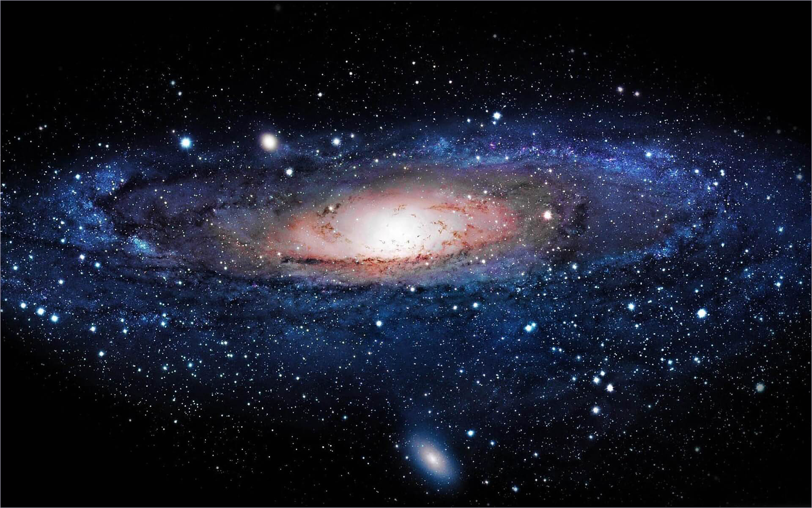

Mặt trời
Mặt Trời, hay Thái Dương hoặc Nhật, chính là ngôi sao ở trung tâm Hệ Mặt Trời, chiếm khoảng 99,8% khối lượng của Hệ Mặt Trời. Trái Đất và các thiên thể khác như các hành tinh, tiểu hành tinh, thiên thạch, sao chổi, và bụi quay quanh Mặt Trời
Sao Hỏa
Sao Hỏa hay Hỏa tinh là hành tinh thứ tư tính từ Mặt Trời và là hành tinh có kích thước bé thứ hai trong Hệ Mặt Trời, chỉ lớn hơn Sao Thủy. Nó thường được gọi với tên khác là "Hành tinh Đỏ", do sắt oxide có mặt rất nhiều trên bề mặt hành tinh làm cho bề mặt nó hiện lên với màu đỏ đặc trưng.
Sao Thủy
Sao Thủy hay Thủy tinh là hành tinh nhỏ nhất và gần Mặt Trời nhất trong tám hành tinh thuộc Hệ Mặt Trời, với chu kỳ quỹ đạo bằng khoảng 88 ngày Trái Đất. Nhìn từ Trái Đất, hành tinh hiện lên với chu kỳ giao hội trên quỹ đạo bằng xấp xỉ 116 ngày, và nhanh hơn hẳn những hành tinh khác.